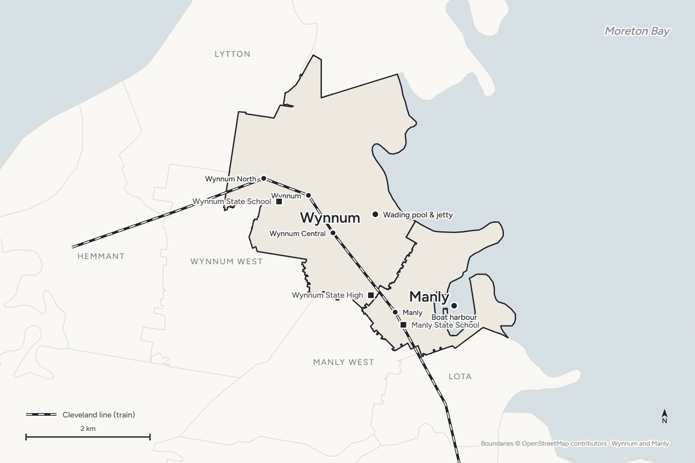

Your questions answered · Dealing with a builder
What is the QBCC, and what should you
check on a builder's licence?
Before you sign anything with a builder in Queensland, you can look them up. It takes five minutes, it's free, and it tells you things a brochure never will. Here's what the QBCC is, what the register shows, and what to do with it.
 Nathan Brain, carpenter and builder at Sabre
17 September 2026
6 min read
Nathan Brain, carpenter and builder at Sabre
17 September 2026
6 min read

What is the QBCC?
It's the regulator. Every builder, and most trades, in Queensland needs a licence from it to do the work legally.
“The QBCC is a statutory body … established under the Queensland Building and Construction Commission Act 1991 (QBCC Act) to regulate the building industry.” It “helps to ensure maintenance of proper building standards and remedies for defective building work.”
Queensland Building and Construction Commission, About us. In plain words: it decides who can build, keeps the list, and is who you go to when something's wrong.
Four jobs matter to you as a homeowner:
- Licensing. A builder without a current QBCC licence can't lawfully contract for your build.
- The register. Every licence is public, with its history.
- Complaints and disputes. Defective work, non-completion, and the process for both.
- The Queensland Home Warranty Scheme. The insurance behind residential building work.
How do you look a builder up?
- Ask the builder for their QBCC licence number. Any builder will give it to you without a pause. Ours is on every page of this site.
- Go to the QBCC website and choose Search a QBCC register, then the licensee register.
- Search by the licence number, or by name if you don't have it. Searching by number avoids a builder with a similar name.
- Open the record.
If you'd rather talk to a person, the QBCC's number is 139 333.
What should you check on the licence?
“Search the QBCC licensee register to check the history of your builder before you sign the contract on your next repair, renovation or build.”
Queensland Building and Construction Commission, Our lists and registers. Their words, not ours. Do it before the deposit, not after.
Three things, in this order:
- Is it current? The status should be active. Not suspended, not cancelled, not expired.
- Does the class cover the work? Licence classes say what a licensee may do. A new house or a knockdown rebuild needs a builder's licence that covers that scope, not a trade licence.
- Is it the same entity? The name and ABN on the licence should match the name on your quote and your contract. A licence held by a person doesn't cover a company they've since set up, and the other way round.
Then read the history. The register records disciplinary matters against a licensee, including demerit points and directions to rectify, for a period after they occur. A clean history isn't a guarantee. A messy one is information.
What doesn't the register tell you?
Whether they're any good.
A licence says a builder met the requirements to hold one. It doesn't say they answer the phone in month four, or that their last three families would build with them again. For that you want their Google reviews, all of them, and a phone number for a recent client. Point five here is how we'd read a builder's reviews.
The register also may not show everything about a licensee's financial position or civil disputes. It's one check, not the only one.
What is the Home Warranty Scheme, and what does it cover?
It's the insurance behind your build, and the builder arranges it, not you.
In the QBCC's own words, the premium is “collected from you and paid to us by the contractor”, is “included as part of your contract”, and is “compulsory for all residential construction work valued at more than $3,300 (including cost of materials, labour and GST).” The cover lasts for six years and six months.
It protects you in two situations:
- Non-completion — the builder doesn't, or can't, finish the work you contracted for.
- Defective work — the builder doesn't fix defects.
The scheme covers a maximum of $200,000 for each category of loss, or $300,000 if optional additional cover was taken out within the time limits. It is not home and contents insurance, and it can't be transferred from one contractor to another.
The practical check: ask your builder how the home warranty premium appears in your contract. If it doesn't, ask why.
Why does the type of contract matter to the insurance?
Because the scheme treats the two common contract types differently, and most people don't find out until it matters.
The QBCC says fixed-price residential contracts can be covered for both non-completion and defective work claims. Cost-plus contracts are covered for defective work only. Their reasoning: to settle a non-completion claim they need to know what you agreed to pay to finish, and a cost-plus contract has no fixed final price.
That's not an argument against cost-plus in every case. It's a thing to know before you choose, and it's one of the questions worth putting to any builder, including us.
Where does Sabre sit in all this?
QBCC licence 15486557. Master Builders Queensland member 00352. Both numbers are in the footer of every page on this site.
We put them there so you don't have to ask. Look us up, read the history, then read the reviews. We'd rather you did all three before you rang.
Common questions
Does the search cost anything?
No. The QBCC licensee register is public and free to search online.
The builder says the insurance is “included.” Is that enough?
Ask to see where. The premium forms part of your contract price, and the QBCC issues the policy for your work. You should be able to see the cover attached to your property.
What if we're buying a house that was recently built or renovated?
The QBCC says a buyer or their legal agent can search whether any home warranty insurance is attached to the property. Worth doing before settlement on any recently built Bayside home.
What's the difference between the QBCC and Master Builders?
The QBCC is the government regulator; every builder must hold its licence. Master Builders Queensland is an industry association a builder chooses to join. Both numbers are worth checking, and they're different things.
Sources: Queensland Building and Construction Commission — About us; Our lists and registers; Queensland Home Warranty Scheme: What is home warranty insurance and Maximum amounts covered; Demerit points. Read 17 September 2026. Cover amounts, thresholds and register rules change; check the QBCC's current pages before you rely on any figure here. This is a plain-English guide, not legal or financial advice.
Keep reading

Who are the small independent builders on Brisbane's Bayside?
What the words actually mean, how to find the builders near Wynnum and Manly who fit them, the checks that work on any of us, and where Sabre sits.

What is a knockdown rebuild package, and is it the right way to build?
What an advertised package bundles, who it suits, and six questions worth asking any builder.

Thinking of rebuilding in Wynnum or Manly? Five things to know first
The pre-1947 rule, what the block decides, where you live while it happens, and who's on the phone in month four.
Where most families start
A walk through your house with Nathan.
Look us up first — licence 15486557 — then come and meet the people behind the number.
Book your walk-through with Nathan Call 0422 831 306
Already thinking about a rebuild? The free block check is on the same page.